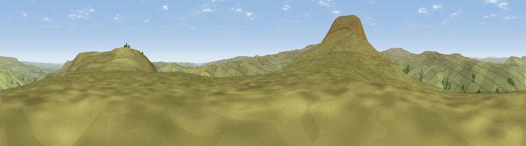

Viewpoint c9563_8076
#20517 in England · top 44% of its area beats it · —The view, rendered

A 360° render of this exact spot computed from the terrain model, tree cover and land cover — summer colours, afternoon light, calibrated against photographs of famous viewpoints. Real trees, hedges and buildings will differ in detail.
The panorama
Grey silhouette: terrain skyline in each direction (720 bearings, Earth curvature and refraction included). Dashed green: skyline with trees (+15 m) and buildings (+8 m) as obstacles. Blue strip: how far the ground is visible on each bearing.
Where the view opens
Wedge length = distance to the farthest visible ground on that bearing (vegetation-aware). Rings at 10, 25 and 50 km.
What fills the view
98% grassland · 1% woodland
Angular shares of the visible panorama (visual magnitude), not map area. Landscape diversity 0.04 (0–1 Shannon).
Key numbers
More beautiful places nearby
The staircase of upgrades: each row has a higher view potential than everything closer. Driving times are estimates from straight-line distance, calibrated against real road routing — check an actual route before setting out.
| Place | Direction | Drive | Score |
|---|---|---|---|
| Viewpoint c9553_8056 | WSW · 1 km | ~3 min | 74.9 |
| Viewpoint near Kettlewell | WSW · 4 km | ~9 min | 76.6 |
| Viewpoint near Buckden | W · 8 km | ~16 min | 77.3 |
| Viewpoint near East Witton | ENE · 12 km | ~23 min | 77.8 |
| Little Ingleborough | W · 30 km | ~47 min | 78.8 |
| Viewpoint near Ingleton | W · 30 km | ~47 min | 79.5 |
| Whernside | W · 30 km | ~47 min | 79.9 |
| Viewpoint near Kirby Knowle | ENE · 43 km | ~62 min | 80.5 |
54.19932, -1.94287 · source: screening · position refined by local search. Computed location — check access rights before visiting.